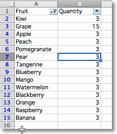

筛选和排序¶
在工作簿中添加筛选是可能的。
备注
筛选和排序只能通过 openpyxl 进行设置，但是只有在 Excel 这样的程序中才会被应用。这是由于他们会在范围内重新排列或者格式化单元格或行。
定义范围后，你可以对一列添加筛选或者添加排序条件：
from openpyxl import Workbook
wb = Workbook()
ws = wb.active
data = [
["Fruit", "Quantity"],
["Kiwi", 3],
["Grape", 15],
["Apple", 3],
["Peach", 3],
["Pomegranate", 3],
["Pear", 3],
["Tangerine", 3],
["Blueberry", 3],
["Mango", 3],
["Watermelon", 3],
["Blackberry", 3],
["Orange", 3],
["Raspberry", 3],
["Banana", 3]
]
for r in data:
ws.append(r)
ws.auto_filter.ref = "A1:B15"
ws.auto_filter.add_filter_column(0, ["Kiwi", "Apple", "Mango"])
ws.auto_filter.add_sort_condition("B2:B15")
wb.save("filtered.xlsx")
这将向文件中添加相关指令，但实际上 既不会过滤也不会排序。
